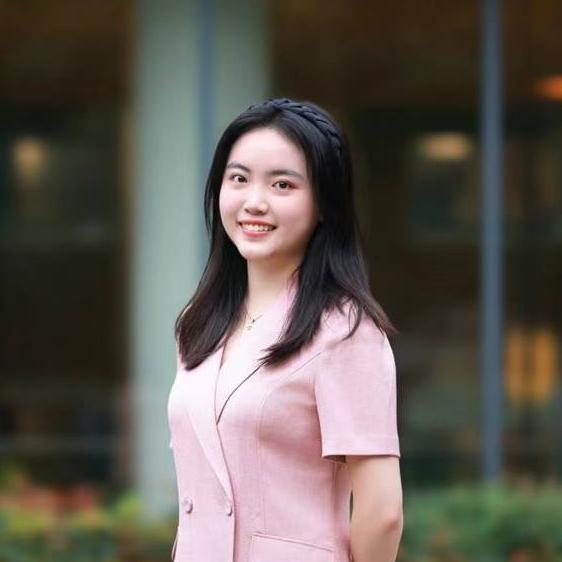

<div class="responsive-container-block outer-container">
  <div class="responsive-container-block inner-container">
    <div class="responsive-cell-block wk-tab-12 wk-mobile-12 wk-desk-4 wk-ipadp-4 headings-container">
      <head>
    <link rel="stylesheet" href="style.css">
    <meta charset="UTF-8">
      </head>
      <p class="text-blk heading-text">
        Meet our dream team
      </p>
      <p class="text-blk sub-heading-text">
       Enxian Fu, Eleonore Wen, Yash Bajaj, Lydia Dennett
      </p>
   
  <div class="card">
   
  <div class="text-content">
    <p class="text-blk name">
      Eleonore WEN
    </p>
    <p class="text-blk position">
      Software Engineer & Data Scientist
    </p>
    <p class="text-blk description">
      Eleonore is a software engineer and data scientist at the Anti-Displacement Project. 
      She is currently pursuing her Master in Public Policy (2024-2026) at Harvard Kennedy School, 
      with a concentration in Business and Government Policy as well as the Data and Research track.
    </p>
    <p class="text-blk description">
      Eleonore holds a bachelor's degree in Economics from Renmin University of China. 
      She has extensive experience in strategic consulting and market insight analytics. Passionate about combining data-driven insights with public policy, Eleonore is committed to leveraging her skills to address pressing societal challenges and drive impactful solutions.
    </p>

  </div>

</div>